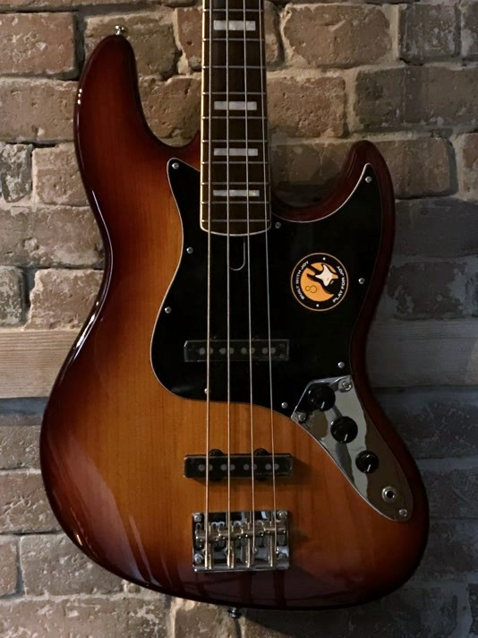

Découvrez notre collection de basses électriques ! N'oubliez pas que le mieux est de venir en magasin pour essayer directement 😉
Retour aux instruments
×

Sire - Marcus Miller V5R Tobacco Sunburst
Basse Jazz
✨
Sire - Marcus Miller V5R Tobacco Sunburst
La Marcus Miller V5R est le step-up grâce à son corps aulne et ses deux micros. Avec son manche Edgeless, elle procure un confort optimal, rendant chaque styles de jeu naturels.
Sire - Marcus Miller V7 Ash Reissue 4-String (2nd Generation) Natural Satin
Basse Jazz
💖
Sire - Marcus Miller V7 Ash Reissue 4-String (2nd Generation) Natural Satin
Pour ceux qui cherchent la polyvalence, la V7 Reissue se démarque par son commutateur actif/passif, ses potentiomètres assurant un maximum de flexibilité, et son manche en érable.
Sire - Marcus Miller V7 Swamp Ash 4-String (2nd Generation) Tobacco Sunburst
Basse Jazz
💖
Sire - Marcus Miller V7 Swamp Ash 4-String (2nd Generation) Tobacco Sunburst
Pour ceux qui cherchent la polyvalence, la V7 Swamp Ash se démarque par son commutateur actif/passif, ses potentiomètres assurant un maximum de flexibilité, et son manche en érable.
Fender - American Standard Precision Bass Maple Fingerboard Black
Basse Precision
💎
Fender - American Standard Precision Bass Maple Fingerboard Black
L'incarnation de l’élégance et la puissance du son Fender authentique. Avec son toucher précis, son sustain exceptionnel et son look intemporel, l'American Standard Precision Bass offre une présence scénique irrésistible et une fiabilité à toute épreuve. L’instrument idéal pour les bassistes exigeants qui veulent un groove massif et professionnel.
La légendaire Precision Bass 1979, ou plutôt le plaisir ultime de jouer de la basse électrique. Manche et touche en érable et corps en aulne, un électronique aux contrôles simples mais efficaces, et surtout d'une précision hors-norme.
Intervention(s) sur l'occasion : Reprise complète électro, réglage complet et entretien
Envie de découvrir la basse électrique à petit prix ? Squier propose un modèle simple qui convient tout juste pour les débutants avec l'Affinity Precision Bass : finitions sobres, 3 potentiomètres de contrôle, mais surtout un corps fin et léger pour garantir une bonne jouabilité !
Envie de découvrir la basse électrique à petit prix ? Squier propose un modèle simple qui convient tout juste pour les débutants avec l'Affinity Precision Bass : finitions sobres, 3 potentiomètres de contrôle, mais surtout un corps fin et léger pour garantir une bonne jouabilité !
La basse d'entrée de gamme de la série V en version passive. Pour ceux qui veulent commencer à la basse électrique à petit prix ! Le matériel, la construction du corps et le manche de la Sire V3P, approuvés par Marcus Miller, ainsi que l'électronique passive, complètent le rapport qualité-prix de cette basse.
La basse d'entrée de gamme de la série V en version passive. Pour ceux qui veulent commencer à la basse électrique à petit prix ! Le matériel, la construction du corps et le manche de la Sire V3P, approuvés par Marcus Miller, ainsi que l'électronique passive, complètent le rapport qualité-prix de cette basse.
La basse d'entrée de gamme de la série V en version passive. Pour ceux qui veulent commencer à la basse électrique à petit prix ! Le matériel, la construction du corps et le manche de la Sire V3P, approuvés par Marcus Miller, ainsi que l'électronique passive, complètent le rapport qualité-prix de cette basse.